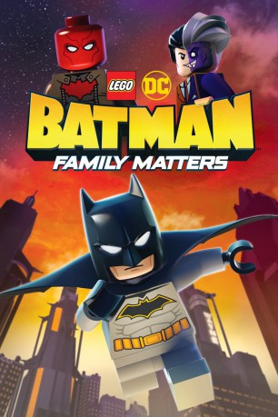

#11506 LEGO DC: Batman - Familienangelegenheiten
Alternativ: LEGO DC: Batman - Family Matters (Originaltitel)
 
 IMDB-Wertung: 5.7 / 10
IMDB-Wertung: 5.7 / 10  Metascore: 0
Metascore: 0 
In LEGO DC: Batman - Family Matters, suspicion is on high after Batman, Batgirl, Robin and other DC superheroes receive mysterious invitations. However, family values must remain strong when Batman and his team encounter the villainous Red Hood, who is obsessed with destroying the Bat-family and all of Gotham City.
Jahr: 2019
Dauer: 79 Minuten
FSK: 6
Land: USA Studio: Warner Bros. Home EntertainmentTonspuren: DD5.1 - ,
Untertitel: Deutsch, Englisch,
Auflösung: 1080p (1920x1080) Größe: 4188 MB
Genre: Animation/Trick
Regisseur: Matt Peters
Drehbuch: Jeremy Adams
Soundtrack:
Darsteller:
Datei: X:\Kinder Collections\LEGO\LEGO DC Batman - Familienangelegenheiten (2019, FSK6, 1920x1080).mkv seit 22.07.2019
Festplatte: Kinder-Filme+Trick
 Es gibt insgesamt 34 Filme in der Gruppe 'Kinder Collections\LEGO'
Es gibt insgesamt 34 Filme in der Gruppe 'Kinder Collections\LEGO'